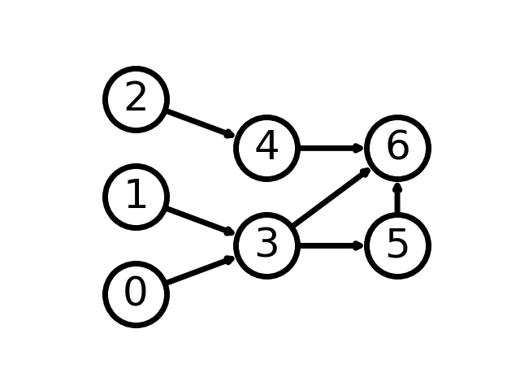
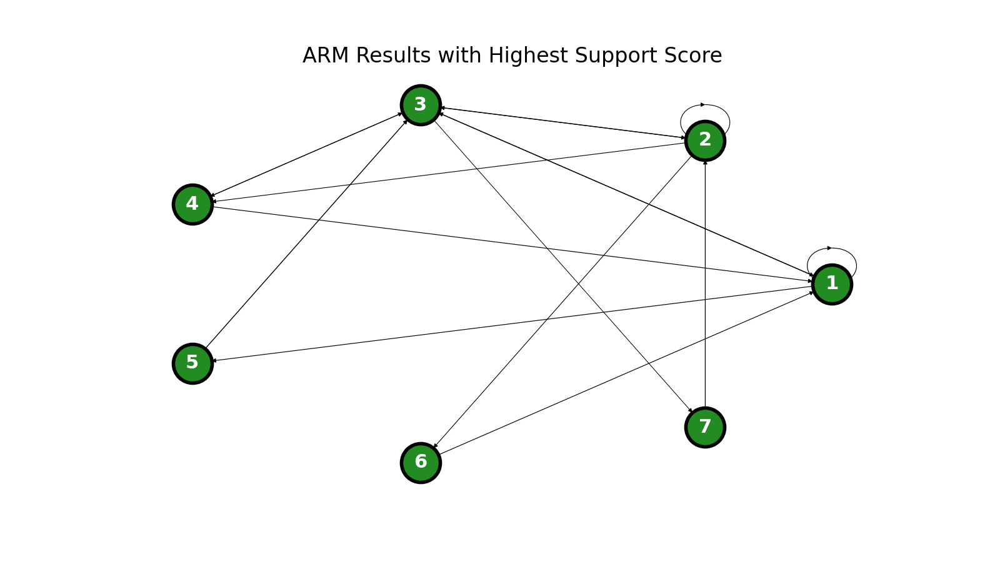
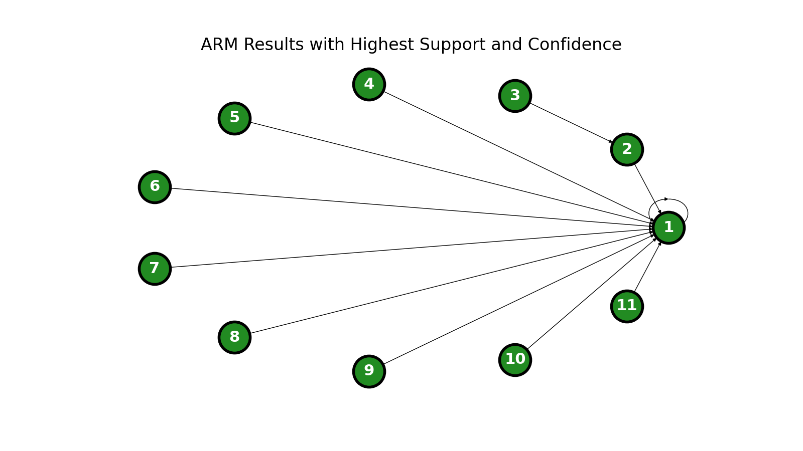

Association Rule Mining (ARM) and Networking
Introduction
In this analysis, I will be using The Violence Project's Mass Shooter Database to identify patterns in the detailed, albeit limited, data they have of 24 school shooters. Using ARM, we will be able to recognize "rules", or commonalities, across the numerous variables associated with each shooter in this dataset.
This technique for analysis will differ from previous techniques used in this project in that it will provide greater room for interpretability of the results. Rather than training an algorithm to make predictions that classify school shootings incidents or tweets, we hope to make inferences about the perpetrators of these incidents from this analysis.
Theory
ARM is built on a concept of network analysis. We may conceptualize record data as network data by considering each record in a dataset to be a node, where all the nodes are connected by common variables.
In the diagram above, each node may be treated as an observation defined by a set of features or variables. The arrows between each node represent connecting features between the observations. For example, suppose the nodes in the diagram represent social media users, and the connections (usually called "edges") represent views on a user's page. We learn from the diagram that User 0 and User 1 have viewed User 3's page, User 3 has viewed User 5's page and User 6's page, and so forth.
Using this framework of network data, ARM systematically identifies rules in the network according to the relative frequency of connections between nodes. For example, using the sample diagram above we may find from an ARM analysis that if User 6's page is viewed, as a rule the user that viewed it is User 3, User 4, or User 5. The rules are obviously most meaningful with larger datasets, but they can provide grounds for interesting inferences and directions for further research.
Methods
The Python code documenting the ARM computations can be found here.
Results
There are a few metrics commonly used to evaluate the results of ARM analysis. Roughly speaking, support is a measure of the frequency of each co-occurrence, confidence is a measure of the ratio of co-occurrences to occurrences of the first item, and support x confidence is a combination of the two. The rules with the highest support (0.65 or higher) are as follows:
| Node Number | Item Description |
|---|---|
| 1 | Exhibited increased agitation |
| 2 | Had an existing relationship with the shooting site |
| 3 | Exhibited signs of being in crisis |
| 4 | Significant prior planning |
| 5 | Exhibited increased agitation AND had an existing relationship with the shooting site |
| 6 | Exhibited signs of being in crisis AND increased agitation |
| 7 | Exhibited signs of being in crisis AND had an existing relationship with the shooting site |
Likewise, the rules with perfect confidence (and support of at least 0.55) are as follows:
| Node Number | Item Description |
|---|---|
| 1 | Exhibited abusive behavior |
| 2 | Exhibited increased agitation |
| 3 | Perpetrator is the youngest child |
| 4 | Exhibited isolation in crisis |
| 5 | Was notably depressed |
| 6 | Perpetrator was dead before their trial |
| 7 | Exhibited abusive behavior AND increased agitation |
| 8 | Had an existing relationship with the shooting site AND increased agitation |
| 9 | Exhibited increased agitation AND isolation in crisis |
| 10 | Exhibited increased agitation AND significant prior planning |
| 11 | Was notably depressed AND communicated intent to harm to a third party |
Conclusions
Although these results are all "statistically" significant (having high support), they aren't of particular interest or "practically" significant. Many of the items are understandably very highly correlated with each other. For example, it makes sense that if a perpetrator exhibits abusive behavior in crisis, they tend to also exhibit increased agitation. One of the more interesting results is the connection between being the youngest child and exhibiting increased agitation in crisis.
One important principle to remember in this analysis is that we can make no claims about causation between rule items. For example, we cannot say that abusive behavior in crisis leads to agitated behavior. Although it is a logical claim, ARM only identifies highly correlated events and leaves room for inference.
For future work, we would prune out the crisis variables to leave more room for interesting rules.
References
The sample network diagram is taken from this tutorial on the NetworkX website.